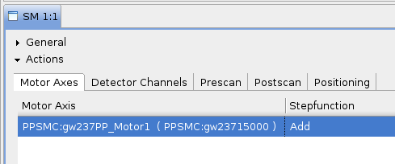
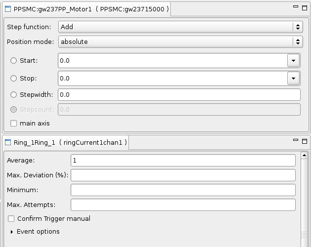

Manipulate the Behavior of a Device
In order to change the behavior of a motor axes or detector channel follow these steps:
- Select the device you want to change (left click) in the appropriate table (motor axes / detector channels table) in the scan module view.
 - Whether you selected a motor axes or detector channel the corresponding view (Motor Axis View or Detector Channel View) will show the current settings of the device.
 - Now you can enter the behavior of the device.
To get more information about the effects of these settings consult motor axis behavior and detector channel behavior .